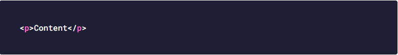
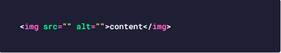
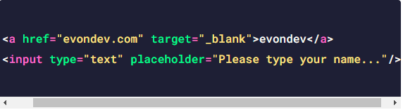
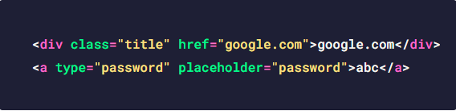
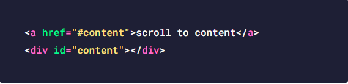
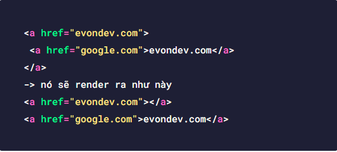
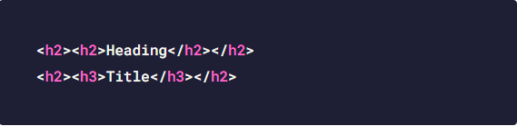
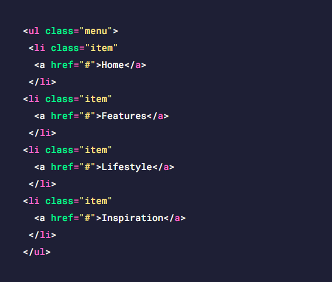
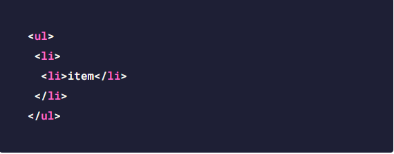
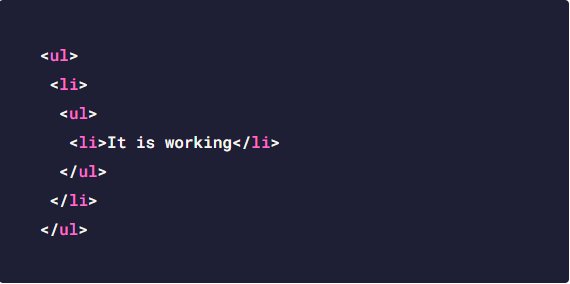

HTML cơ bản toàn tập cho người mới phần 1
05/11/2020HTML cơ bản cho người mới phần 1 | Giới thiệu EvonDev | Bí kíp code CSS hiệu quả hơn mà các bạn nên biết

Xin chào các bạn đặc biệt là các bạn mới học ngành web này. Đây là một series về kiến thức HTML cơ bản toàn tập dành cho người mới mà mình quyết định viết và chia sẻ cách học, cách sử dụng áp dụng chúng vào thực tế như thế nào, cấu trúc ra sao… thông qua những năm kinh nghiệm mình đi làm và trau dồi. Hi vọng những kiến thức về HTML cơ bản toàn tập mà mình chia sẻ sẽ giúp các bạn hiểu hơn về HTML cơ bản cũng như sử dụng chúng một cách tốt nhất.
Mình thấy nhiều bạn mới học ở nhiều nguồn như w3schools hay MDN là những nguồn học nước ngoài tốt, tuy nhiên đôi khi các bạn đọc tiếng Anh không hiểu cũng như học xong không biết các thẻ trong HTML có những thẻ gì, áp dụng ra sao, lưu ý gì, thuộc tính gì… thì mình sẽ cố gắng chia sẻ hết cho các bạn trong series HTML cơ bản toàn tập này. OK bắt đầu thôi nào.
Ở trong HTML thì việc tìm hiểu cấu trúc một thẻ có thể là quá dễ tuy nhiên các bạn mới học thì nên biết chúng trông như thế nào, và cách sử dụng ra sao để làm cho chuẩn hơn

Ở trên thì là thẻ p với <p> là thẻ mở sau đó đến nội
dung là chữ content rồi đến thẻ đóng là </p> các bạn
thấy thẻ đóng nó giống thẻ mở nhưng có dấu / phía trước nhé. Ngoài ra
sau này các bạn học thêm thì sẽ thấy có một số thẻ người ta gọi là thẻ
tự đóng nó như thế này
Những thẻ có cấu trúc như trên gọi là thẻ tự đóng nghĩa là chúng ta không thể truyền nội dung vào giữa như thẻ đóng mở ở chỗ thẻ p mình nói ở trên, nếu các bạn code như dưới đây là sai nhé, vì thế khi dùng thẻ hãy học cách sử dụng một cách đúng đắn nhất để code chuẩn hơn nhé và tránh gặp lỗi nha.
Những thẻ trong HTML được tạo ra đều có những thuộc tính đi kèm ví dụ như class, id là chung nhất ngoài ra mỗi thẻ sẽ có thêm các thuộc tính riêng ví dụ như thẻ a thì sẽ có href, target, input thì type, require, placeholder… Thì các bạn cần nắm được những cái này để sử dụng một cách đúng đắn nhất để code cho tốt như này
Còn nếu thẻ đó không có mà các bạn đưa nó vào thì nhìn code của các bạn nó tệ lắm như này
Các bạn nhìn vậy có thể sẽ nói sao mà code vậy được chứ mình thấy nhiều bạn mới hay code như này lắm nên mình chia sẻ ở đây nếu các bạn đang đọc blog của mình thì sẽ biết mà né để cho code của các bạn tốt hơn nhá.
Thuộc tính thì rất nhiều và thẻ cũng thế, mình sẽ cố gắng liệt kê kèm giải thích cho các bạn dễ hiểu nhất trong những phần mình sẽ viết tiếp dưới đây
Dành cho bạn
Mình có khoá học HTML CSS từ cơ bản tới nâng cao cho người mới, nếu bạn quan tâm thì bạn có thể học thử miễn phí bằng việc nhấn vào đây nha.
Khi các bạn học tới các thẻ thì hay bị cái là dùng thẻ này thẻ kia mà không biết chúng khác nhau như thế nào từ đó dẫn tới việc code HTML không được tốt hoặc sai mục đích…Thì mình sẽ giải thích cho các bạn biết là thẻ inline và thẻ block khác nhau như thế nào và làm sao để biết thẻ nào là thẻ block và thẻ nào là thẻ inline.
Để nhận biết nhanh nhất đó chính là vào trang web htmlreference.io ở trang này nó sẽ tổng hợp toàn bộ các thẻ trong HTML và có mục đánh dấu thẻ nào là inline thẻ nào là block, thẻ nào là thẻ đóng mở, thẻ nào là thẻ tự đóng luôn để các bạn biết cách sử dụng cho tốt nhất luôn nhé.
Quay lại vấn đề chính thì thẻ inline và thẻ block có những điểm gì mà các bạn cần lưu ý
Ở những mục trên mình đã nói về cấu trúc cơ bản của một thẻ, các thuộc tính trong HTML, sự khác nhau giữa thẻ inline và thẻ block và cách sử dụng đúng đắn rồi. Ở mục này và các bài tiếp theo của series này mình sẽ tập trung nói về các thẻ, các thuộc tính kèm giải thích chi tiết hơn và cách sử dụng cho các bạn để các bạn thông não hơn về HTML nhé.
Thẻ p là thẻ block , thẻ p có các thuộc tính hay dùng là class, id. Thẻ p theo mình nghĩ nó là viết tắt của paragraph là thẻ đại diện cho những đoạn văn bản, ví dụ các bạn đang đọc bài viết của mình các bạn nhấn F12 sẽ thấy các đoạn văn bản đều nằm trong thẻ p, vì thế khi các bạn code các bạn có thể dùng thẻ p để chứa những đoạn văn bản nhé. Tuy nhiên đoạn chữ ngắn vài 3 chữ dùng thẻ p cũng được không sao cả, tuy nhiên chữ ngắn thì mình khuyến khích dùng thẻ inline hoặc các thẻ tiêu đề hơn

Là thẻ block , thẻ div cũng có các thuộc tính như class, id. Thẻ div là thẻ được sử dụng rộng rãi nhất hiện nay. Nó thường được dùng cho một khối nào đó lớn, bên trong khối đó có thể có nhiều khối nhỏ(cũng là thẻ div) hoặc các thẻ p, và nhiều thẻ khác. Các bạn sẽ dùng nó rất nhiều khi code HTML và nó cũng có thể chứa văn bản như thẻ p nhe, tuy nhiên khi dùng thẻ p thì về mặt ý nghĩa thì thẻ p sẽ rõ ràng hơn cho việc đại diện văn bản.

Là thẻ inline , thẻ này dùng cho các liên kết, tức là các bạn muốn cho người dùng nhấn vào ra một trang web nào đó hay chỉ đơn giản là scroll tới mục nào đó trong body với điều kiện mục đó phải có id và trong thuộc tính href của thẻ a phải bắt đầu bằng dấu # như sau

Trong thẻ a các bạn cần biết 3 thuộc tính quan trọng đó chính là
href, target và rel , href sẽ truyền vào đường dẫn
hoặc như mình nói ở trên dấu #,target thì có 2 giá trị thường
được sử dụng nhất là _self và _blank ,
_self thì nó sẽ mở trong tab hiện tại luôn(dễ hiểu hơn nó sẽ thay
thế tab hiện tại trên trình duyệt bằng link các bạn nhấn vào), còn
_blank nó sẽ mở ra một tab mới trên trình duyệt.

Còn rel thì khi các bạn sử dụng với target có giá trị là
_blank thì Google Chrome khuyến khích là thêm vào giá trị
cho rel là noopener noreferrer để tăng tính bảo mật. Mặc
định giá trị trong target là _self rồi nên các bạn có thể
không cần ghi vào cũng được, ví dụ dưới đây
Khi làm việc với thẻ a các bạn cần lưu ý thêm nữa là thẻ a không nên bọc thẻ a vì như vậy nó sẽ sai về code lẫn ý nghĩa sử dụng vì khi nhấn vào liên kết nó đã chạy rồi sẽ không có tác dụng cho một thẻ a con bên trong nữa như này và bên ngoài trình duyệt cũng render ra sai như sau, nên các bạn cần cẩn thận nhé.
Bên trong thẻ a có thể chứa nhiều thẻ khác luôn nhé như thẻ block khác, thẻ inline…Sau này các bạn code giao diện mà có cho người dùng nhấn vào một khối nào đó thì chắc chắn các bạn sẽ dùng thẻ a bao lại hết chúng.
Là thẻ inline và là thẻ tự đóng nên không truyền nội dung
vào giữa như các thẻ đóng mở khác được. Thẻ này sử dụng rất nhiều trong
trang web để hiển thị hình ảnh, thẻ img có 2 thuộc tính chính mà các bạn
cần nắm đó là src và alt trong đó
src truyền vào đường dẫn hình ảnh để hiển thị hình ảnh lên trang
web, còn thẻ alt thì là liên quan tới SEO một chút, khi hình ảnh
đường dẫn sai sẽ không hiển thị được thì nội dung trong thẻ alt sẽ hiển
thị lên.

Ngoài ra trong thẻ img còn có thêm thuộc tính srcset để
hiển thị hình ảnh ở nhiều kích thước màn hình khác nhau tuy nhiên thuộc
tính này khá khó sử dụng cho newbie nên mình chưa giải thích ở phạm vi
dành cho người mới.
Các thẻ tiêu đề là những thẻ h1,h2,h3,h4,h5,h6 là
thẻ block và thường đại diện cho các tiêu đề từ to cho đến nhỏ và
có cách sử dụng khác nhau nhé(h1 là to nhất tới h6 là nhỏ nhất). Thẻ
h1 là thẻ thường được sử dụng cho một tiêu đề to nhất của trang
web và lưu ý trong một trang web thì chỉ có tối đa một thẻ h1 mà
thôi, vì nó ảnh hưởng tới SEO cho nên nếu các bạn sử dụng nhiều hơn một
thẻ h1 thì không tốt đâu nhé.

Thẻ h2 được sử dụng cho một khối lớn, các bạn sẽ thấy khi làm giao diện landing page chẳng hạn, thì thẻ h2 này được dùng làm tiêu đề to cho một khối nào đó để người ta biết được khối đó là gì.

Thẻ h3 được dùng nhỏ hơn ở bên trong các khối lớn đó sẽ có các bài viết nhỏ, khối nhỏ thì dùng h3, và cứ thế khối nhỏ hơn cho đến h4, h5, rồi h6 . Các bạn có thể thấy thực tế luôn là bài mà các bạn đang đọc nè tiêu đề to trên cùng là h1 đó, trong nội dung sẽ có các tiêu đề nhỏ hơn là h2, h3, h4, h5 hay h6…

Như tên gọi của nó thì nó được dùng cho cấu trúc có tiêu đề ví dụ như tiêu đề khối, tiêu đề bài viết, tiêu đề blog, các bạn xem hình minh hoạ là hiểu ngay ấy mà…. Bên trong nó có thể chứa thẻ a, hoặc các thẻ inline khác, hay thẻ block… Và các bạn lưu ý đừng code như dưới này nhé
Hoặc các đoạn văn bản dài như ở thẻ p thì nên dùng thẻ p hoặc thẻ div chẳng hạn chứ đừng dùng những thẻ tiêu đề này cho một đoạn văn bản quá dài nha.
Thẻ danh sách thì có 2 thẻ chính với cấu trúc hay dùng là
ul li và ol li . Trong đó ul nghĩa là
unorderedlist nghĩa danh sách không có thứ tự, tức là khi dùng nó
sẽ hiển thị dưới dạng như này với các chấm tròn mặc định hoặc vuông dựa
vào CSS sẽ nói sau này.
Còn ol là orderedlist nghĩa là danh sách có thứ tự tức được đánh số như mục lục vậy 1 2
Cấu trúc ul li được sử dụng rất nhiều khi làm menu như này

Lưu ý thêm thẻ li cũng không bọc trực tiếp thẻ li để tránh lỗi nhé nó như dưới đây
Tuy nhiên nó sẽ bọc lại được khi không phải trực tiếp li li mà là li ul li để làm menu đa cấp trong HTML hay được sử dụng như sau
Các thẻ semantic các bạn có thể sẽ thấy khi kiểm tra code blog mình hoặc các blog trang web khác… như thẻ header, thẻ footer, thẻ nav, thẻ aside, thẻ article, thẻ main, thẻ section thì các bạn có thể hiểu như này những thẻ này theo cách mình dùng thì nó sẽ làm cho cấu trúc code của chúng ta nó rõ ràng mạch lạc hơn thôi chứ các bạn dùng toàn thẻ div thay vì dùng các thẻ semantic này vẫn ổn, không sao cả.
Tuy nhiên như mình nói dùng những thẻ này thì nhìn cấu trúc code nó rõ ràng mạch lạc hơn là vì nhìn vào là biết nó làm gì, ví dụ các bạn dùng thẻ header thì sẽ biết à nó là header nằm ở phía trên trang web, thẻ nav là dùng cho điều hướng menu, thẻ footer nó nằm ở dưới cùng, thẻ article là bài viết, thẻ section là một khối, …. các bạn có thể check code blog của mình ở trang chủ là sẽ thấy những thẻ này, và nó là thẻ block dùng y chang thẻ div không khác gì, có thể thêm class hay id…
Cho nên là nếu các bạn dùng không quen mà dùng thẻ div không cũng không sao cả nhé.

Đây đều là những thẻ inline, ngược với thẻ p thì những thẻ này thường được sử dụng cho các đoạn chữ ngắn thôi, chữ ngắn là như thế nào ví dụ các bạn sẽ thấy một số thiết kế có đoạn chữ như ngày giờ, tên tác giả,… nó nằm bên trong một khối nào đó nhưng không phải tiêu đề chính nha vì tiêu đề thì nên dùng các thẻ h hơn, tuy nhiên những thẻ này có thể nằm bên trong thẻ h nha, hoặc bên trong các thẻ block khác như này

Thẻ strong và thẻ b giống nhau sẽ làm cho chữ
in đậm , còn thẻ em và thẻ i giống nhau
sẽ làm cho chữ in nghiêng nha.
Woww viết ra cũng dài cũng được khá nhiều kiến thức tuy cơ bản nhưng rất quan trọng cho các bạn mới học HTML. Ở phần tiếp theo mình sẽ nói đến tất tần tật các thẻ về Form nha. Chúc các bạn học tập tốt và một ngày tốt lành nhen.

HTML cơ bản toàn tập cho người mới phần 3

HTML cơ bản toàn tập cho người mới phần 2